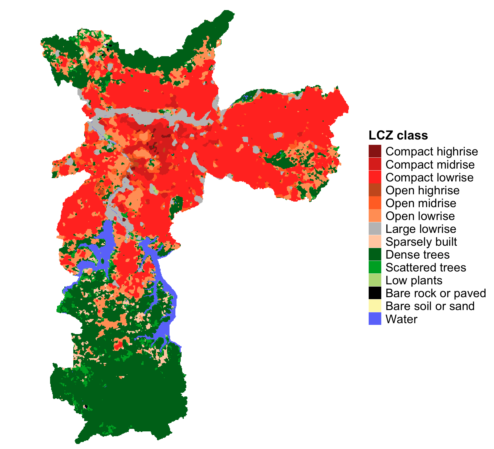
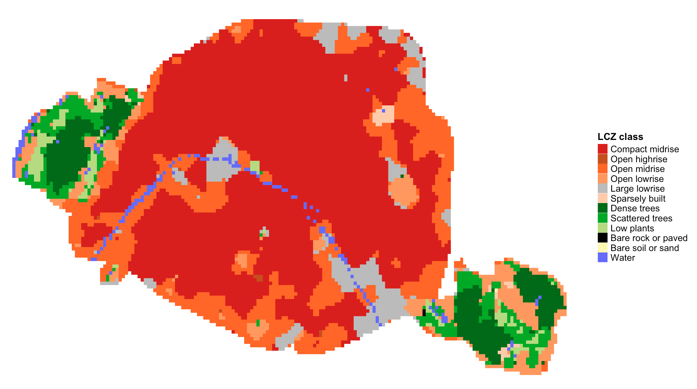
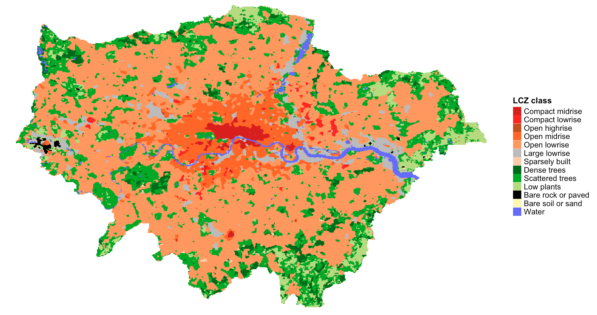
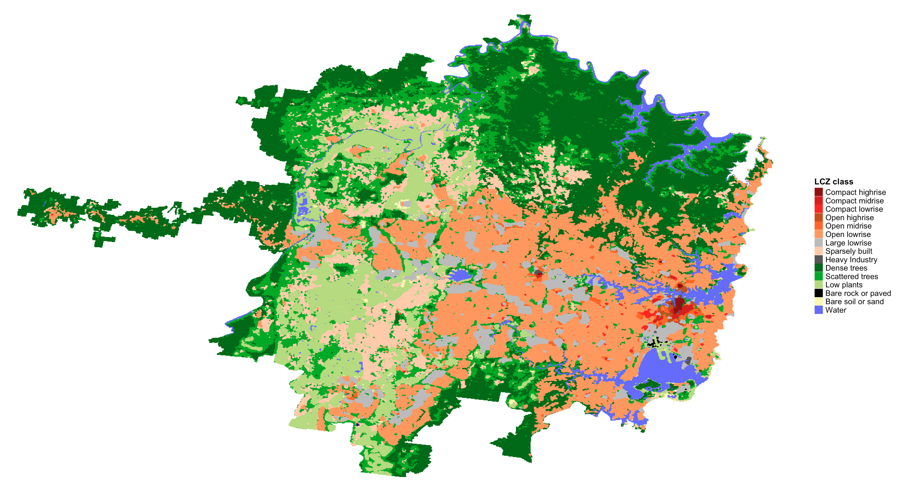
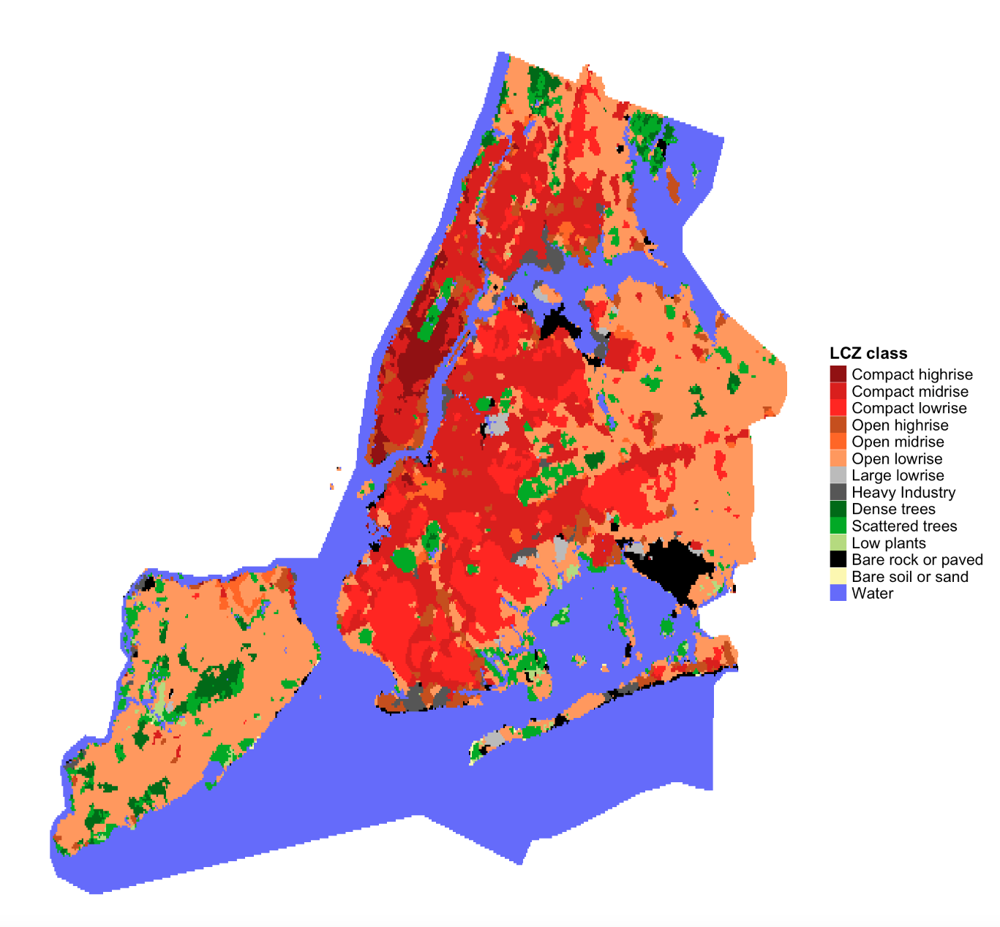
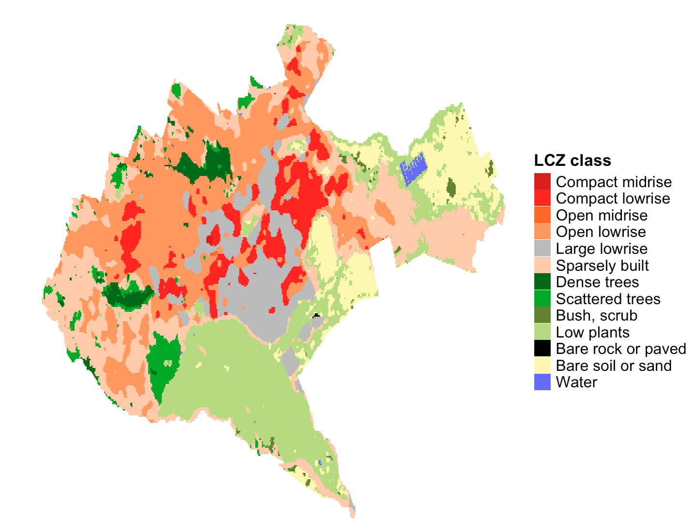
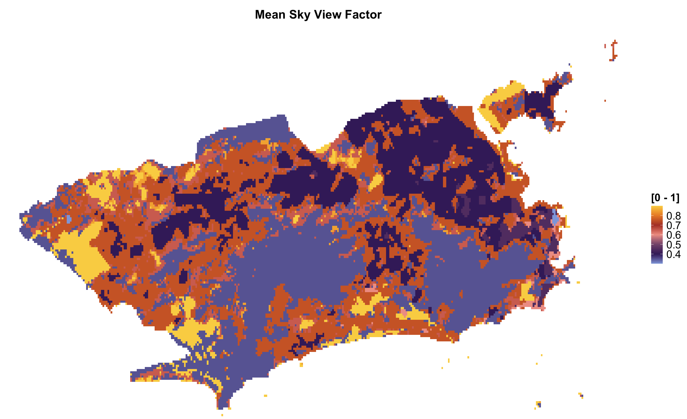
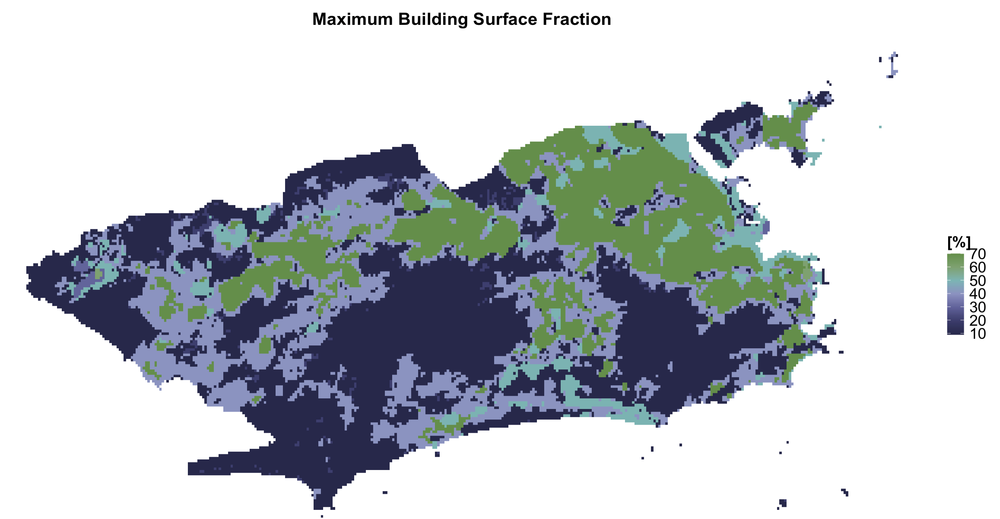

Map, Area and Paramerters
Max Anjos
November 03, 2024
Source:vignettes/Introd_genera_LCZ4r.Rmd
Introd_genera_LCZ4r.RmdThe LCZ4r general functions are
designed to facilitate the retrieval, analysis, and visualization of
Local Climate Zones (LCZ) when LCZ related data is not readily
available. They are engineered to get the LZ map, compute LCZ classes,
and extract specific parameters of interest, including Sky View Factor
(SVF), impervious surface fraction, and roughness element height, among
others.
Getting Started
The general functions, each serving a unique purpose:
| Function | Description | Data Required | Internet Access Required |
|---|---|---|---|
lcz_get_map() |
Download your LCZ map from Global dataset | Not needed | Yes |
lcz_get_map_euro() |
Download your LCZ map from European dataset | Not needed | Yes |
lcz_get_map_usa() |
Download your LCZ map from Continental United States dataset | Not needed | Yes |
lcz_get_map2() |
Download the LCZ map | Not needed | Not needed |
lcz_plot_map() |
Visualize the LCZ map | Not needed | Not needed |
lcz_cal_area() |
Calculate LCZ areas | Not needed | Not needed |
lcz_get_parameters() |
Retrieve LCZ parameters | Not needed | Not needed |
lcz_plot_parameters() |
Visualize LCZ parameters map | Not needed | Not needed |
Tips: Utilize the help(lcz_*) function to access comprehensive documentation for each LCZ function. For instance, you can explore details about the lcz_get_map function by typing help(“lcz_get_map”).
Download and visualize the LCZ map
The lcz_get_map() function facilitates obtaining the LCZ map for your chosen city or a specific Region of Interest (ROI). In our demonstration, we utilized a couple of cities around the world.
library(LCZ4r)
# Get the LCZ map for your city
lcz_map <- lcz_get_map(city="São Paulo")
# Visualize the obtained LCZ map
lcz_plot_map(lcz_map)
euro_map <- lcz_get_map_euro(city="Paris")
lcz_plot_map(euro_map)
euro_map <- lcz_get_map_euro(city="London")
lcz_plot_map(euro_map)
lcz_map <- lcz_get_map(city="Sydney")
lcz_plot_map(lcz_map)
lcz_map <- lcz_get_map(city="京")
lcz_plot_map(lcz_map)
usa_map <- lcz_get_map_usa(city = "New York")
lcz_plot_map(usa_map)
my_map <- lcz_get_map(city = "Nairobi")
lcz_plot_map(my_map)
Here are some tips to enhance your experience:
1. As an alternative, users can download their own LCZ map from WUDAPT or LCZ generator application and integrate them into the LCZ4r system using the lcz_get_map2(LCZmap, city = “your city”).
2. Fallback Option: In rare instances where the lcz_get_map() function faces inconsistencies (e.g., due to connectivity issues), you can rely on lcz_get_map2() as an alternative solution.
3. Custom ROI: Utilize the lcz_get_map() function along with a shapefile for your ROI by coding lcz_get_map(roi=“your_shp”). Refer to the R package sf documentation for guidance on loading the shapefile into R. ## Calculate LCZ areas
Calculate LCZ areas
This lcz_cal_area() function calculates the area for
each LCZ classes, as follows:
lcz_map <- lcz_get_map(city="Rio de Janeiro")
lcz_cal_area(lcz_map)
Tips: this function provides a table.csv of the calculated LCZ areas, coding like this: lcz_cal_area(lcz_map, iplot = FALSE)
Retrieve and visualize LCZ parameters
This lcz_get_parameters()function gives you to retrieve
diverse LCZ parameters, encompassing minimum, maximum, and mean values,
drawn from Stewart and Oke (2012). These parameters are convertible into
either shapefiles or a raster stack, where multiple rasters are
aggregated into a single file.
Here’s a glimpse of the available LCZ parameters:
| Code | Parameter | Description | Unit |
|---|---|---|---|
| SVF1 | Sky View Factor | Minimum Sky View Factor | [0-1] |
| SVF2 | Sky View Factor | Maximum Sky View Factor | [0-1] |
| SVF3 | Sky View Factor | Mean Sky View Factor | [0-1] |
| AR1 | Aspect ratio | Minimum Aspect Ratio | [0-3] |
| AR2 | Aspect ratio | Maximum Aspect Ratio | [0-3] |
| AR3 | Aspect ratio | Mean Aspect Ratio | [0-3] |
| BSF1 | Building Surface Fraction | Minimum Building Surface Fraction | [%] |
| BSF2 | Building Surface Fraction | Maximum Building Surface Fraction | [%] |
| BSF3 | Building Surface Fraction | Mean Building Surface Fraction | [%] |
| ISF1 | Impervious Surface Fraction | Minimum Impervious Surface Fraction | [%] |
| ISF2 | Impervious Surface Fraction | Maximum Impervious Surface Fraction | [%] |
| ISF3 | Impervious Surface Fraction | Mean Impervious Surface Fraction | [%] |
| PSF1 | Vegetation Surface Fraction | Minimum Vegetation Surface Fraction | [%] |
| PSF2 | Vegetation Surface Fraction | Maximum Vegetation Surface Fraction | [%] |
| PSF3 | Vegetation Surface Fraction | Mean Vegetation Surface Fraction | [%] |
| TSF1 | Tree Surface Fraction | Minimum Tree Surface Fraction | [%] |
| TSF2 | Tree Surface Fraction | Maximum Tree Surface Fraction | [%] |
| TSF3 | Tree Surface Fraction | Mean Tree Surface Fraction | [%] |
| HRE1 | Height Roughness Elements | Minimum Height Roughness Elements | [meters] |
| HRE2 | Height Roughness Elements | Maximum Height Roughness Elements | [meters] |
| HRE3 | Height Roughness Elements | Mean Height Roughness Elements | [meters] |
| TRC1 | Terrain Roughness class | Minimum Terrain Roughness class | [meters] |
| TRC2 | Terrain Roughness class | Maximum Terrain Roughness class | [meters] |
| TRC3 | Terrain Roughness class | Mean Terrain Roughness class | [meters] |
| SAD1 | Surface Admittance | Minimum Surface Admittance | [J m-2 s1/2 K-1] |
| SAD2 | Surface Admittance | Maximum Surface Admittance | [J m-2 s1/2 K-1] |
| SAD3 | Surface Admittance | Mean Surface Admittance | [J m-2 s1/2 K-1] |
| SAL1 | Surface Albedo | Minimum Surface Albedo | [0-0.5] |
| SAL2 | Surface Albedo | Maximum Surface Albedo | [0-0.5] |
| SAL3 | Surface Albedo | Mean Surface Albedo | [0-0.5] |
| AH1 | Anthropogenic Heat Outupt | Minimum Anthropogenic Heat Outupt | [W m-2] |
| AH2 | Anthropogenic Heat Outupt | Maximum Anthropogenic Heat Outupt | [W m-2] |
| AH3 | Anthropogenic Heat Outupt | Mean Anthropogenic Heat Outupt | [W m-2] |
| z0 | Roughness Lenght | Roughness Lenght class | [meters] |
Rio de Janeiro LCZ parameters
# Extract the LCZ parameters for raster stack format
lcz_map <- lcz_get_map(city="Rio de Janeiro")
LCZpar <- lcz_get_parameters(lcz_map, istack = TRUE)
LCZpar
Maps
lcz_plot_parameters(LCZpar, iselect = "SVF3")
lcz_plot_parameters(LCZpar, iselect = "BSF2")
lcz_plot_parameters(LCZpar, iselect = "z0")